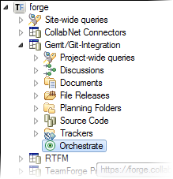

Introduced with TeamForge 7.0, TeamForge Orchestrate is a TeamForge add-on that provides traceability for product lifecycle activities such as SCM commits, continuous integration (CI) builds, and code reviews.
When TeamForge Orchestrate is installed and configured for your project, you will see the Orchestrate node under your TeamForge project in the CollabNet Sites view.
